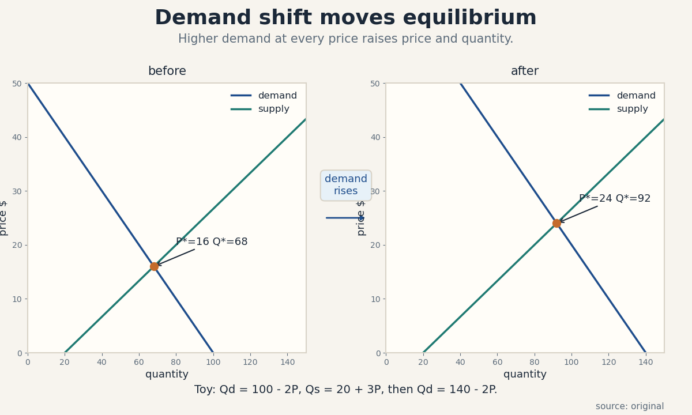
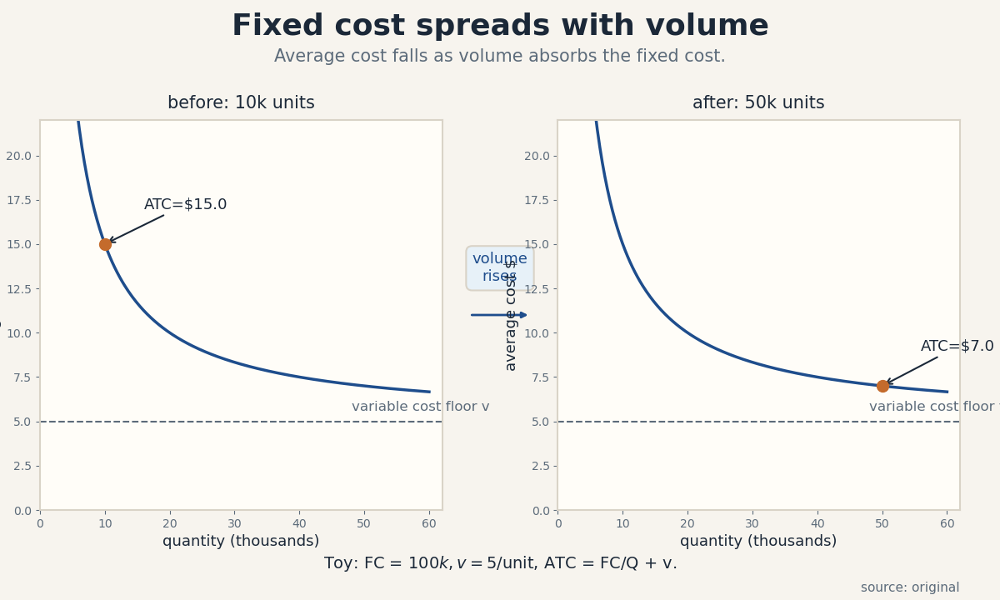
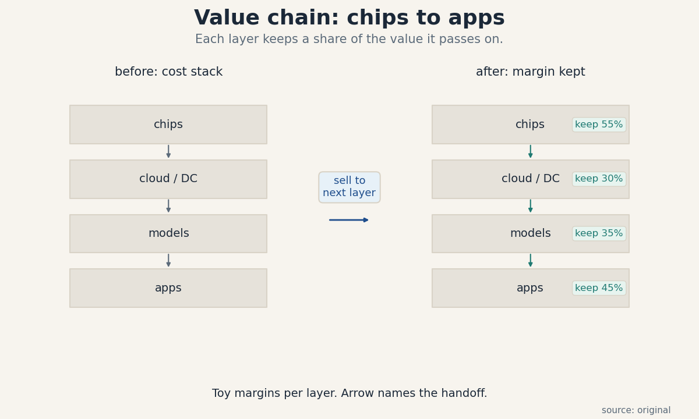
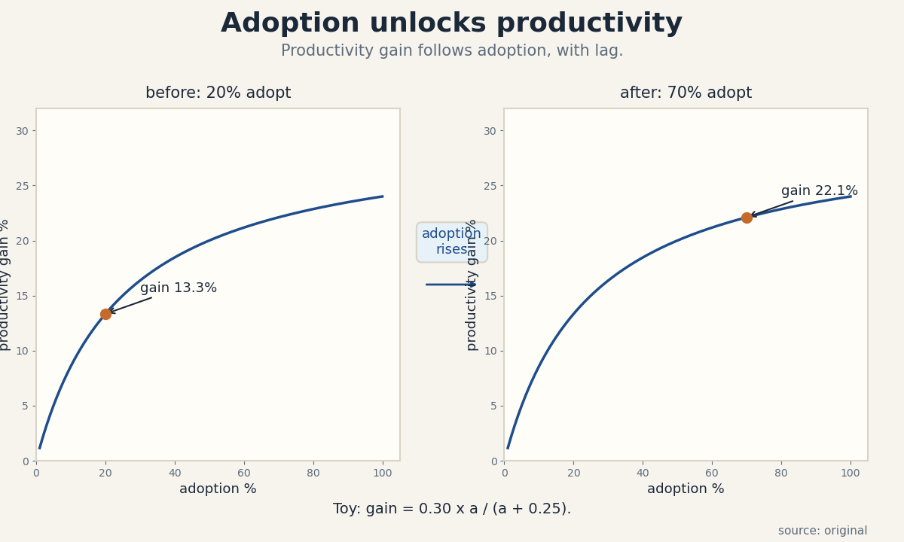

U01 · AI economics and the value chain
U01 , AI economics and the full value chain
Parent unit: mse435-U01. Bridges: P01, P23. Local remediation in
prerequisites.md (U01-R1 to U01-R3). Shared bridges linked, not
rebuilt.
Claim class: OFFICIAL-SCHEDULE (session 1, “Intro to the Economics of Generative AI”, materials page SRC-00). Every leaf: PLANNED / SOURCE ATTRIBUTION PENDING. Toy numbers are computed locally and labeled TOY. Speaker forecasts carry evidence labels.
Not-yet-understood dependency list (unit level)
- Linear equation solving (P01) , needed for C01 equilibrium.
- Unit checking (U01-R1) , needed for C03-C05 cost arithmetic.
- Percent versus percentage point (U01-R2) , needed for C02, C10.
- Present value (P23) , needed for C04.
mse435-U01-C01 , supply/demand
Claim class. OFFICIAL-SCHEDULE. Status. PLANNED / SOURCE ATTRIBUTION PENDING.
1. Source mapping, scope, objectives, dependencies
Maps to week 1 of the materials list. Scope: one market, one good, one price. Objective: the learner solves for equilibrium price and quantity from linear supply and demand, and predicts the direction of a shift. Dependencies: P01 linear equations, U01-R1 units.
2. Motivating question and tiny toy
Motivating question: if buyers want more GPU-hours at every price, does the price rise, and by how much? Tiny toy: a market for GPU-hours with demand Qd = 100 - 2P and supply Qs = 20 + 3P. P is dollars per GPU-hour, Q is GPU-hours per day.
3. Plain-language mental model
Demand lists how much buyers take at each price. Supply lists how much sellers offer at each price. The market settles where the two lists agree. A shift in demand moves the settling point along the supply curve.
4. Variables, units, shapes, assumptions
P: dollars per GPU-hour. Q: GPU-hours per day. Qd(P) and Qs(P) are functions from price to quantity. Assumptions: one price clears the whole market, no buyer or seller moves the price alone, the curves are straight lines in the relevant range, and adjustment is fast enough that we study the resting point.
5. Justified derivation
Set Qd(P) = Qs(P). With Qd = a - bP and Qs = c + dP, where a, b, c, d are positive numbers and a > c:
a - bP = c + dP a - c = (b + d) P P* = (a - c) / (b + d)
Then Q = a - bP. The denominator b + d is positive, so a unique solution exists. Each term earns its place: a - c is excess demand at price zero, and b + d is the combined slope that absorbs it.
6. Computed numerical example
Toy: a = 100, b = 2, c = 20, d = 3.
P = (100 - 20) / (2 + 3) = 80 / 5 = 16 dollars. Q = 100 - 2 x 16 = 68 GPU-hours per day. Check on supply: 20 + 3 x 16 = 68. Both agree.
Demand shift: buyers now want Qd = 140 - 2P at every price. P = (140 - 20) / 5 = 24 dollars. Q = 140 - 2 x 24 = 92 GPU-hours per day. The price rose by 8 dollars and quantity rose by 24 units.
7. Algorithm and minimal implementation
def equilibrium(a, b, c, d):
# Solve a - bP = c + dP for P, then Q. All inputs positive,
# with a greater than c.
p_star = (a - c) / (b + d)
q_star = a - b * p_star
return p_star, q_star
print(equilibrium(100, 2, 20, 3)) # before the shift
print(equilibrium(140, 2, 20, 3)) # after the shift
8. Correctness checks and expected output
Expected output: (16.0, 68.0) then (24.0, 92.0). Check:
plug P back into both curves and confirm the quantities match.
Check units: P is dollars, Q is GPU-hours per day. Check the
shift direction: higher demand at every price must raise P when
supply slopes up. If it does not, the sign of a term is wrong.
9. Complexity, costs, stability
Closed form, O(1) time and memory. No statistical content: this is algebra, not estimation. Stability: the solution is stable when the denominator b + d stays away from zero. If both curves are nearly flat, tiny data errors move P* a lot, which is a numerical warning, not a market fact.
10. Nearest alternatives and selection boundaries
Alternative 1: auction or posted-price clearing, which picks the price from bids rather than from curves. Use it when you have bid data and no estimated curves. Alternative 2: disequilibrium models with inventories, which track the path to the resting point. Use them when adjustment is slow, for example data-center capacity that takes two years to build. The curve model wins when you need a fast directional answer from sparse data.
11. Failure case, broken assumption, counterexample
Break the fast-adjustment assumption. If supply cannot move for two years (new data centers take time), a demand jump first creates a shortage at the old price: buyers want 92 units, sellers offer 68. The price signal exists but the quantity cannot follow until capacity arrives. The equilibrium formula still gives the target, but the market lives off-target for the build period. Counterexample: price controls. A capped price below P* makes Qs < Qd permanent, and the “equilibrium” from the formula never appears.
12. Research reading and falsifiable extension
Read P23 on supply/demand, then compare the toy prediction with a real cloud GPU price series. Falsifiable extension: collect weekly spot prices and utilization for one GPU type over 12 weeks. Hypothesis: weeks with utilization above 85 percent show price rises the next week. The hypothesis fails if high-utilization weeks are followed by flat prices, which would point to administered pricing rather than market clearing.
13. Assessment
Breadth recall:
- State the equilibrium condition in one sentence.
- If supply shifts right and demand stays fixed, what happens to price and quantity?
Deep oral ladder (supply/demand):
- Define equilibrium without using the word “balance”.
- Toy: solve Qd = 60 - P, Qs = 3P - 20 by hand.
- Derive P* = (a - c) / (b + d) and name what each term means.
- Implement the solver and state two checks you would run.
- Compare with an auction: when does the curve model mislead?
Unfamiliar transfer: a token market caps price at 10 dollars while equilibrium is 16 dollars. Who is rationed, and what non-price mechanism decides who gets tokens?
14. Lab / exercises
See labs/u01_lab.md, task 1 (equilibrium solver on three toy
markets, verified by labs/u01_lab_run.py).
15. Visual units and audit
visuals/figures/u01_supply_demand.png: before/after demand shift,
one rule (“demand rises”), computed intersections P* = 16 and 24.
Source: original. Alt text: two panels, each with a falling
demand line and a rising supply line crossing at a marked
equilibrium point, the after panel shows higher price and
quantity. Audit: PASS (see visual_audit.md).

mse435-U01-C02 , complements/substitutes
Claim class. OFFICIAL-SCHEDULE. Status. PLANNED / SOURCE ATTRIBUTION PENDING.
1. Source mapping, scope, objectives, dependencies
Maps to week 1. Scope: how the price of one good moves demand for another. Objective: classify a pair as complements or substitutes from a cross-price elasticity sign, with a toy calculation. Dependencies: C01, U01-R2.
2. Motivating question and tiny toy
Motivating question: when GPU prices fall, does demand for data center power rise or fall? Tiny toy: GPU rental price falls 20 percent. Power demand rises 6 percent. Are GPUs and power complements or substitutes?
3. Plain-language mental model
Complements are used together: cheaper GPUs mean more GPUs running, which means more power burned. Substitutes replace each other: cheaper API tokens mean fewer firms self-host. The sign of the cross effect tells you which pair you face.
4. Variables, units, shapes, assumptions
Cross-price elasticity E_xy = (% change in Qx) / (% change in Py). Pure number, no unit. E_xy < 0 means complements. E_xy > 0 means substitutes. Assumptions: the two goods are the only moving prices, income and tastes fixed, and the percent changes are small enough that the ratio is stable.
5. Justified derivation
Start from a demand function Qx(Px, Py). For small changes:
dQx / Qx = E_xx x (dPx / Px) + E_xy x (dPy / Py)
Hold Px fixed, so the first term is zero. Then the observed ratio (dQx / Qx) / (dPy / Py) estimates E_xy. The sign carries the economics: a negative ratio means Qx moves opposite to Py, the signature of joint use.
6. Computed numerical example
Toy: GPU price falls 20 percent (dPy / Py = -0.20). Power demand rises 6 percent (dQx / Qx = +0.06).
E_xy = 0.06 / (-0.20) = -0.30. Negative, so GPUs and power are complements, and the magnitude 0.30 says the link is moderate.
Substitute toy: API token price falls 20 percent. Self-hosted GPU demand falls 10 percent. E_xy = (-0.10) / (-0.20) = +0.50. Positive, so API tokens and self-hosting are substitutes.
7. Algorithm and minimal implementation
def cross_elasticity(pct_qx, pct_py):
# Both inputs as fractions, e.g. 0.06 for +6 percent.
return pct_qx / pct_py
def classify(e):
if e < 0:
return "complements"
if e > 0:
return "substitutes"
return "independent"
print(classify(cross_elasticity(0.06, -0.20))) # GPUs and power
print(classify(cross_elasticity(-0.10, -0.20))) # API vs self-host
8. Correctness checks and expected output
Expected: complements then substitutes. Check the sign logic
against the mental model: joint use must give a negative ratio.
Check units: both inputs are pure fractions, the output is a pure
number. Edge: pct_py = 0 raises a division error, which is
correct behavior, since no price move means no identification.
9. Complexity, costs, stability
O(1). The statistical risk is the real cost: two percent changes from noisy data give a noisy ratio. Small denominators (tiny price moves) blow up the estimate. Treat any elasticity from one observation as a hypothesis, not a measurement.
10. Nearest alternatives and selection boundaries
Alternative: estimate a full demand system with regression when you have panel data. Use it when many prices move at once and you must separate their effects. The two-number ratio wins for a first-pass classification or an interview answer. Never use the ratio to set a price, use it to name the relationship.
11. Failure case, broken assumption, counterexample
Break the fixed-tastes assumption. Suppose a new model release makes everyone want GPUs at the same time the price falls. Power demand rises, but the cause is the model release, not the price cut. The ratio still computes to -0.30, but the label “complements” now rides on a confounded change. Counterexample: short-run versus long-run. In the short run, cheaper API tokens may not cut self-hosting at all (contracts lock firms in), so the pair looks independent this quarter and substitutable next year.
12. Research reading and falsifiable extension
Read P23 on complements and substitutes. Falsifiable extension: pick one cloud region and track GPU spot price and power draw weekly for a quarter. Hypothesis: the cross elasticity is negative and stable. It fails if the sign flips between months, which would suggest a third driver (new model releases) dominates the price effect.
13. Assessment
Breadth recall:
- What sign marks complements, and what sign marks substitutes?
- Name one complement pair and one substitute pair in AI infra.
Deep oral ladder:
- Define cross-price elasticity without symbols.
- Toy: price of X falls 10 percent, demand for Y rises 4 percent. Classify and compute.
- Derive the ratio from the demand function and state the held assumption.
- Implement the classifier and name its division-by-zero guard.
- Compare with a regression estimate: when is the ratio enough?
Unfamiliar transfer: a firm sells both training and inference. Training prices fall 30 percent and inference demand rises. Is that evidence of complementarity, or could one story explain both? Name the confounder.
14. Lab / exercises
See labs/u01_lab.md, task 2 (classify three pairs from toy
percent changes).
15. Visual units and audit
Table in the lesson (medium ladder: the claim is a comparison of values). No state change, so no plate is drawn, the conflict rule is logged here rather than faked. The pair/sign/magnitude table appears in section 6.
mse435-U01-C03 , fixed/variable costs
Claim class. OFFICIAL-SCHEDULE. Status. PLANNED / SOURCE ATTRIBUTION PENDING.
1. Source mapping, scope, objectives, dependencies
Maps to week 1. Scope: cost structure of one firm in one period. Objective: split total cost, compute break-even, and show why average cost falls with volume. Dependencies: P01, U01-R1.
2. Motivating question and tiny toy
Motivating question: a token API charges 15 dollars per 1M tokens and serves 10k blocks a month. Is it profitable? Tiny toy: fixed cost 100k dollars per month, variable cost 5 dollars per 1M-token block, price 15 dollars.
3. Plain-language mental model
Fixed cost is the rent you pay whether you serve one token or one billion. Variable cost is the compute you burn per token. Profit is what is left after both. Volume is the lever: more volume spreads the same fixed cost over more units, so each unit looks cheaper.
4. Variables, units, shapes, assumptions
FC: dollars per month (fixed). v: dollars per unit (variable per unit). Q: units per month. TC(Q) = FC + vQ, dollars per month. ATC(Q) = FC/Q + v, dollars per unit. Assumptions: v is constant in Q over the relevant range, FC does not step up inside the range, and price is fixed.
5. Justified derivation
Profit pi(Q) = P x Q - FC - vQ = (P - v) x Q - FC. The term (P - v) is the contribution margin: each unit contributes this much toward the fixed cost. Set pi = 0:
Q_be = FC / (P - v)
This needs P > v. If price does not clear variable cost, no volume breaks even, and the formula gives a negative quantity, which is the algebra telling you to stop.
6. Computed numerical example
Toy: FC = 100,000, v = 5, P = 15. Contribution = 10 dollars per block. Q_be = 100,000 / 10 = 10,000 blocks per month. At 10,000 blocks: revenue 150,000, variable cost 50,000, fixed 100,000, profit 0. ATC at 10,000 = 100,000/10,000 + 5 = 15 dollars. ATC at 50,000 = 100,000/50,000 + 5 = 7 dollars. Same firm, same costs, half the unit cost at 5x volume.
7. Algorithm and minimal implementation
def break_even(fc, v, p):
# Returns break-even quantity, or None when price cannot
# cover variable cost.
if p <= v:
return None
return fc / (p - v)
def avg_cost(fc, v, q):
return fc / q + v
print(break_even(100_000, 5, 15))
print(avg_cost(100_000, 5, 10_000), avg_cost(100_000, 5, 50_000))
8. Correctness checks and expected output
Expected: 10000.0 then (15.0, 7.0). Check: profit at Q_be is
zero by direct substitution. Check: ATC falls toward v as Q
grows, never below v. Check units: Q_be is units per month.
9. Complexity, costs, stability
O(1). The practical risk is a stepped FC: at some Q the firm must rent a second cluster and FC jumps. The smooth formula then understates cost just past the step. Model steps as piecewise when the data shows them.
10. Nearest alternatives and selection boundaries
Alternative: activity-based costing, which splits FC across activities instead of units. Use it when one firm serves many products and the shared FC must be allocated. The simple split wins for a single-product toy or a first-pass unit. Never use ATC as the price floor in a competitive bid, the floor is v plus the opportunity cost of capacity.
11. Failure case, broken assumption, counterexample
Break constant v. At very high volume the firm negotiates cheaper power, so v falls with Q, and ATC falls faster than FC/Q alone predicts. Break fixed FC: a usage-based cloud bill makes most cost variable, so the “fixed cost” lever disappears and break-even moves with volume differently. Counterexample: a firm with zero FC and v = P has zero margin per unit, doubling volume doubles revenue and cost together, and profit stays zero.
12. Research reading and falsifiable extension
Read P23 on fixed/variable costs and unit economics. Falsifiable extension: take one inference provider’s published price and an estimated v from power math. Hypothesis: observed price sits between v and the ATC at plausible volume. It fails if price sits below estimated v for a sustained period, which would imply a loss-leader strategy or a wrong v.
13. Assessment
Breadth recall:
- Write TC, ATC, and break-even quantity from memory.
- Why does ATC fall with Q even when v is constant?
Deep oral ladder:
- Define fixed cost so that a cloud bill can be classified.
- Toy: FC = 60k, v = 4, P = 10. Compute break-even by hand.
- Derive Q_be and state the P > v condition.
- Implement the solver and name the guard for P <= v.
- Compare with activity-based costing: when does the simple split mislead?
Unfamiliar transfer: a provider moves from owned GPUs (high FC, low v) to cloud rental (low FC, high v). At what volume does the old structure win? Set up the inequality.
14. Lab / exercises
See labs/u01_lab.md, task 3 (break-even sweep over prices,
verified outputs).
15. Visual units and audit
visuals/figures/u01_fixed_variable.png: before/after volume,
one rule (“volume rises”), ATC 15.00 at 10k and 7.00 at 50k,
computed. Source: original. Alt text: two panels showing a
falling average-cost curve, the after panel marks a lower point
at higher quantity. Audit: PASS.

mse435-U01-C04 , capex/opex
Claim class. OFFICIAL-SCHEDULE. Status. PLANNED / SOURCE ATTRIBUTION PENDING.
1. Source mapping, scope, objectives, dependencies
Maps to week 1, and recurs in weeks 2-3 (data centers). Scope: one-time versus recurring spend for the same capability. Objective: compare buying hardware with renting it via NPV. Dependencies: C03, P23 discounting, U01-R1.
2. Motivating question and tiny toy
Motivating question: is it cheaper to buy a GPU server or rent the same compute for four years? Tiny toy: buy at 200,000 dollars now, or rent equivalent compute at 60,000 dollars per year, discount rate 10 percent.
3. Plain-language mental model
Capex is money spent once for an asset that lasts years. Opex is money spent every period to keep running. Buying front-loads the pain and then looks cheap per year. Renting spreads the pain but never ends. The discount rate decides how much the future pain matters today.
4. Variables, units, shapes, assumptions
capex: dollars at time 0. opex_t: dollars in year t. r: discount rate per year. T: horizon in years. NPV = -capex + sum over t of (-opex_t) / (1 + r)^t for the buy option, versus sum over t of (-rent_t) / (1 + r)^t for rent. Assumptions: same capability both ways, r constant, no salvage value unless stated, and the horizon T is fixed.
5. Justified derivation
A dollar next year is worth 1 / (1 + r) today, because 1 / (1 + r) invested at r becomes a dollar. Apply to each year’s cash flow and add. For a constant annual cost X over T years, the sum is a geometric series:
PV = X x (1 - (1 + r)^(-T)) / r
Each term earns its place: (1 + r)^(-t) discounts year t, and the closed form just adds the series without a loop.
6. Computed numerical example
Toy: rent X = 60,000 per year, T = 4, r = 0.10. Factor = (1 - 1.10^(-4)) / 0.10 = (1 - 0.6830) / 0.10 = 3.1699. PV of rent = 60,000 x 3.1699 = 190,192 dollars. Buy capex = 200,000 dollars. Rent wins by 9,808 dollars in present value, before maintenance. Add 5,000 dollars per year of maintenance to the buy side: PV = 5,000 x 3.1699 = 15,849, total buy PV = 215,849. Rent wins by 25,657 dollars.
7. Algorithm and minimal implementation
def pv_annuity(x, r, t):
# Present value of x paid at the end of each year for t years.
return x * (1 - (1 + r) ** (-t)) / r
def buy_vs_rent(capex, maint, rent, r, t):
buy_pv = capex + pv_annuity(maint, r, t)
rent_pv = pv_annuity(rent, r, t)
return buy_pv, rent_pv
print(buy_vs_rent(200_000, 5_000, 60_000, 0.10, 4))
8. Correctness checks and expected output
Expected: (215848.65..., 190192.14...) approximately. Check:
at r = 0 the factor must equal T (no discounting). Check: PV
falls when r rises. Check units: all terms in dollars.
9. Complexity, costs, stability
O(1) closed form, O(T) with a loop. Numerical risk is low, but the economic risk is high: the answer swings with r and with the rent path. A 2-point move in r can flip the decision, so always report the crossover rate.
10. Nearest alternatives and selection boundaries
Alternative: IRR, the rate that zeroes the NPV difference. Use it when the decision must be quoted as a return. Alternative: payback period, which ignores discounting. Use it only for a liquidity check, never for the decision. NPV wins as the decision rule because it respects the time value of money.
11. Failure case, broken assumption, counterexample
Break constant rent. If rent falls 15 percent per year (hardware gets cheaper), the rent PV drops and buying looks worse than the constant-rent math says. Break the fixed horizon: if the asset lasts 6 years instead of 4, buying gains two free years the toy ignores. Counterexample: buying wins on NPV but the firm cannot raise 200,000 dollars now. The NPV rule assumes capital access, the cash constraint overrides it.
12. Research reading and falsifiable extension
Read P23 on capital/operating expense. Falsifiable extension: track one cloud GPU price series for a year. Hypothesis: the implied 4-year rent PV stays above new-server capex, which would explain continued buying. It fails if rent PV falls below capex, predicting a shift toward renting.
13. Assessment
Breadth recall:
- State the difference between capex and opex in one sentence each.
- Why does a higher discount rate favor renting?
Deep oral ladder:
- Define present value without the formula.
- Toy: 100 dollars in one year at 10 percent. Compute PV.
- Derive the annuity factor and name the series used.
- Implement buy_vs_rent and state the r = 0 check.
- Compare NPV with payback period: what does payback ignore?
Unfamiliar transfer: a vendor offers a 3-year prepaid commit at 40 percent off on-demand. Set up the NPV comparison against on-demand, naming the two risks that could flip it.
14. Lab / exercises
See labs/u01_lab.md, task 4 (buy-versus-rent grid over r and
rent paths, verified outputs).
15. Visual units and audit
Table in the lesson (medium ladder: comparison of values). The before/after is the cash-flow series, a plate would decorate the table. Logged as an honest exception: no state change drawn.
mse435-U01-C05 , value capture
Claim class. OFFICIAL-SCHEDULE. Status. PLANNED / SOURCE ATTRIBUTION PENDING.
1. Source mapping, scope, objectives, dependencies
Maps to week 1. Scope: how much of the created value each layer keeps. Objective: separate value creation from value capture and compute capture shares along a chain. Dependencies: C03, U01-R1.
2. Motivating question and tiny toy
Motivating question: AI creates large total value, but who keeps it, the chip maker, the cloud, the model lab, or the app? Tiny toy: an app sells 100 dollars of value built on a 20-dollar model API, running on 10 dollars of cloud, using 5 dollars of chips. Each layer keeps a margin on what it passes on.
3. Plain-language mental model
Value creation is the size of the pie: total willingness to pay minus total cost. Value capture is the slice each player keeps. A layer captures value when buyers cannot easily go around it. Bottlenecks capture more, commodities capture less.
4. Variables, units, shapes, assumptions
For layer i: cost_i (dollars), price_i (dollars charged to the next layer), margin_i = (price_i - cost_i) / price_i (pure number). Total created value = final price - sum of true input costs. Assumptions: each layer’s cost is known, transfer prices are observable, and the final price reflects willingness to pay.
5. Justified derivation
Walk the chain backward. The app sells at P_app. Its input cost is the model API price P_model. App capture = P_app - P_model - its own operating cost. Repeat down the chain. The sum of all layers’ capture plus all true costs equals the final price. This is an accounting identity, not a theory: it must hold, so it checks the numbers rather than explaining them. The economics enters in why margins differ: scarcity and differentiation let a layer charge above cost.
6. Computed numerical example
Toy chain, one unit of final output:
- Chips: cost 5, price 11, margin (11-5)/11 = 54.5 percent.
- Cloud: cost 11 (chip price) + 4 own cost = 15, price 21.4, margin (21.4-15)/21.4 = 29.9 percent.
- Model: cost 21.4 + 8 = 29.4, price 45.2, margin 35.0 percent.
- App: cost 45.2 + 10 = 55.2, price 100, margin 44.8 percent.
Total created value = 100 - (5+4+8+10) = 73 dollars. Captured shares of the 73: chips 6, cloud 6.4, model 15.8, app 44.8. The app keeps the largest slice in this toy, the chip maker the largest rate.
7. Algorithm and minimal implementation
def capture_shares(costs, prices):
# costs[i]: own cost of layer i. prices[i]: price layer i
# charges the next layer (last price is the final price).
shares = []
prev_price = 0.0
for c, p in zip(costs, prices):
total_in = prev_price + c
shares.append(p - total_in)
prev_price = p
return shares
costs = [5.0, 4.0, 8.0, 10.0]
prices = [11.0, 21.4, 45.2, 100.0]
print(capture_shares(costs, prices))
8. Correctness checks and expected output
Expected: [6.0, 6.4, 15.8, 44.8] approximately. Check: the
shares plus all own costs equal the final price
(6+6.4+15.8+44.8+5+4+8+10 = 100). Check: no share is negative in
a healthy chain, a negative share flags a loss leader.
9. Complexity, costs, stability
O(n) in layers. The numbers are only as good as the transfer prices, which are often private. Public estimates carry wide bands, report ranges, not points.
10. Nearest alternatives and selection boundaries
Alternative: profit-pool analysis over time, which tracks how shares move as layers commoditize. Use it for strategy, the static split is a snapshot. Alternative: Shapley value from cooperative game theory, which assigns credit by marginal contribution across coalitions. Use it when layers truly co-produce and the accounting split feels arbitrary.
11. Failure case, broken assumption, counterexample
Break observable prices. Inside one vertically integrated firm, transfer prices are internal and set for tax or accounting, not for markets. The computed “capture” per division is then fiction. Counterexample: open weights. When the model layer is free, its capture is zero by construction, and value shifts to the layers around it (cloud hosting, apps), even though the model created most of the capability.
12. Research reading and falsifiable extension
Read P23 on margins and bottlenecks. Falsifiable extension: pick one AI value chain and estimate layer margins from public filings for two years. Hypothesis: the bottleneck layer’s margin is the most stable. It fails if the commodity layer’s margin moves least, which would suggest the bottleneck moved.
13. Assessment
Breadth recall:
- State the difference between value creation and value capture.
- Why does a bottleneck layer capture more?
Deep oral ladder:
- Define capture share without symbols.
- Toy: costs [5, 4], prices [11, 21.4]. Compute both shares.
- Derive the accounting identity and name what it checks.
- Implement capture_shares and state the sum check.
- Compare with Shapley value: when is the accounting split misleading?
Unfamiliar transfer: a lab releases weights for free and sells only an API with support. Recompute the toy chain with model price equal to its cost. Where does the freed value go?
14. Lab / exercises
See labs/u01_lab.md, task 5 (capture shares on two toy chains,
one with a free layer).
15. Visual units and audit
Table in the lesson (comparison of values). The chain architecture plate belongs to C06, C05 is logged here as a table medium per the medium ladder. No fake state change drawn.
mse435-U01-C06 , layers from chips to applications
Claim class. OFFICIAL-SCHEDULE. Status. PLANNED / SOURCE ATTRIBUTION PENDING.
1. Source mapping, scope, objectives, dependencies
Maps to week 1, and frames weeks 2-5. Scope: the four-layer stack and what each layer sells to the next. Objective: name every layer, its input, its output, and its customer. Dependencies: C05.
2. Motivating question and tiny toy
Motivating question: what exactly does each layer sell, and why can the layers not collapse into one firm? Tiny toy: trace one token from a GPU to a chat answer, naming the owner at each handoff.
3. Plain-language mental model
Chips sell raw compute. Clouds and data centers sell reliable compute at scale: power, cooling, networking, uptime. Model labs sell intelligence: trained weights or API calls. Apps sell outcomes: an answer, a draft, a decision. Each layer buys the layer below and sells a more finished product upward.
4. Variables, units, shapes, assumptions
Layer objects: chip (unit: accelerator), facility (unit: MW of IT load), model (unit: parameters, or tokens per call), app (unit: task or seat). Interfaces: PCIe/network between chip and facility, API or weight files between facility and model, UI or API between model and app. Assumptions: layers are separable by contract even inside one firm, and each interface has a price or a cost.
5. Justified derivation
There is no theorem here, the mechanism is specialization. Chip design, power engineering, model training, and product design need different skills and different capital. Separation persists because the efficient scale differs per layer: a chip fab serves the world, a data center serves a region, an app serves a niche. When efficient scales differ, one firm rarely runs all layers at each layer’s best scale, so trade across layers beats integration, except where a bottleneck makes integration pay.
6. Computed numerical example
Toy: one chat answer costs the app 0.02 dollars in tokens. The token price decomposes: 0.008 model margin and cost, 0.010 facility cost (power, cooling, servers amortized), 0.002 chip amortization. The stack shows where a 50 percent chip price cut lands: chips fall to 0.001, the app saves 0.001 per answer, or 5 percent. Cost cuts at the bottom dilute as they rise.
7. Algorithm and minimal implementation
def stack_cost(chip, facility, model):
# Dollars per answer at each layer, bottom up.
total = chip + facility + model
return {"chip": chip, "facility": facility,
"model": model, "total": total}
base = stack_cost(0.002, 0.010, 0.008)
cut = stack_cost(0.001, 0.010, 0.008)
print(base, cut)
8. Correctness checks and expected output
Expected: totals 0.020 and 0.019. Check: the parts sum to the total. Check: a cut at one layer changes the total by exactly the cut, no more. Check units: dollars per answer at every level.
9. Complexity, costs, stability
O(layers). The practical cost is mislabeled layers: calling a neocloud a “chip company” mixes the facility margin into the chip margin and breaks comparisons.
10. Nearest alternatives and selection boundaries
Alternative: a three-layer view (infra, models, apps) that folds chips into infra. Use it when chip detail does not change the decision. The four-layer view wins when chip supply or chip choice is the question (weeks 2-3). Alternative: vertical integration analysis, which asks when one firm should own two layers. Use it for make-versus-buy, not for mapping.
11. Failure case, broken assumption, counterexample
Break separable contracts. A lab that designs its own chip and runs its own data centers (full integration) has no market price between layers, the “layer costs” become internal allocations. Counterexample: the API layer can vanish. When apps run open weights on rented clouds, the model layer’s price is zero and the stack has three economic layers, not four.
12. Research reading and falsifiable extension
Read the week 2-3 session titles (GPU economy, gigawatt-scale factories) as the chip and facility layers’ official anchors. Falsifiable extension: track the token-price decomposition for one provider for a year. Hypothesis: the facility share is the most stable. It fails if model-layer pricing moves most, which would point to model competition as the price driver.
13. Assessment
Breadth recall:
- Name the four layers and what each sells.
- Why do efficient scales keep the layers separate?
Deep oral ladder:
- Define the stack without naming companies.
- Toy: decompose a 2-cent answer into three layer costs.
- Explain why a chip price cut dilutes as it rises.
- Implement stack_cost and state the sum check.
- Compare the four-layer and three-layer views: when does the chip layer earn its own box?
Unfamiliar transfer: a startup offers “tokens at cost” by running open weights on spot GPUs. Draw its stack and name the layer with zero price.
14. Lab / exercises
See labs/u01_lab.md, task 6 (stack decomposition with a chip
price shock).
15. Visual units and audit
visuals/figures/u01_value_chain.png: named boxes and named
edges, before (cost stack) and after (margin kept), one rule
(“sell to next layer”). Source: original. Alt text: two columns
of four labeled boxes (chips, cloud/DC, models, apps) with
arrows down the column, the right column adds a “keep NN%” tag
per box. Audit: PASS.

mse435-U01-C07 , consumer versus enterprise
Claim class. OFFICIAL-SCHEDULE. Status. PLANNED / SOURCE ATTRIBUTION PENDING.
1. Source mapping, scope, objectives, dependencies
Maps to week 1 (State of Consumer AI readings, SRC-04/05/06, titles only). Scope: how the buyer type changes pricing, sales, and adoption math. Objective: compare the two motions on unit economics. Dependencies: C03, C05.
2. Motivating question and tiny toy
Motivating question: why do consumer AI products chase free users while enterprise AI chases contracts? Tiny toy: a consumer app with 10M free users and 2 percent paying 20 dollars a month, versus an enterprise product with 50 contracts at 200k dollars a year.
3. Plain-language mental model
Consumers decide alone, pay little, and leave fast. Revenue comes from huge numbers times small prices, or from ads. Enterprises decide by committee, pay a lot, and stay for years. Revenue comes from contracts with expansion. The unit economics differ because acquisition cost, churn, and willingness to pay differ.
4. Variables, units, shapes, assumptions
Consumer: users (count), conversion rate (pure number), ARPU (dollars per user per month), churn (fraction per month). Enterprise: accounts (count), ACV (dollars per account per year), sales cycle (months), net retention (pure number). Assumptions: consumer churn is constant per month, enterprise contracts renew annually, and support cost per account is fixed.
5. Justified derivation
Consumer monthly revenue = users x conversion x ARPU. With 10M x 0.02 x 20 = 4M dollars per month. Enterprise annual revenue = accounts x ACV = 50 x 200,000 = 10M dollars per year, or 0.83M per month. The enterprise book is smaller in revenue here but each account is worth 200k / (20 x 12) = 833 consumer-years. That ratio is why enterprise sales can afford humans and consumer sales cannot.
6. Computed numerical example
Toy consumer: 10M users, 2 percent convert, 20 dollars ARPU: revenue 4.0M per month. Support and infra 2.5M per month. Profit 1.5M per month. Toy enterprise: 50 accounts, 200k ACV: revenue 10M per year. Sales and support 6M per year. Profit 4M per year, or 0.33M per month. The consumer business earns more total profit in the toy, but needs 10M users to do it, losing 1 percent of users costs 40k per month, while losing one enterprise account costs 200k per year.
7. Algorithm and minimal implementation
def consumer_rev(users, conv, arpu):
return users * conv * arpu
def enterprise_rev(accounts, acv):
return accounts * acv
print(consumer_rev(10_000_000, 0.02, 20)) # per month
print(enterprise_rev(50, 200_000) / 12) # per month
8. Correctness checks and expected output
Expected: 4000000.0 and 833333.33.... Check: units are
dollars per month on both. Check: the consumer figure scales
linearly with conversion, a 1-point conversion miss moves
revenue by 2M per month, which is the sensitivity that matters.
9. Complexity, costs, stability
O(1). The statistical trap is survivorship: observed enterprise deals are the won deals, the pipeline cost of lost deals hides in sales expense. Always divide sales cost by won accounts with the loss rate included.
10. Nearest alternatives and selection boundaries
Alternative: prosumer (individual professionals paying per seat), which mixes consumer scale with enterprise willingness to pay. Use the consumer model below ~50 dollars per month per user and the enterprise model above ~10k ACV, model the middle as prosumer. The binary split misleads in the middle.
11. Failure case, broken assumption, counterexample
Break constant churn. A consumer app with 10 percent monthly churn must replace its whole base yearly, acquisition cost then dominates and the profit toy collapses. Counterexample: a consumer subscription with 99 percent annual retention behaves like enterprise (predictable, expandable) and should be modeled that way.
12. Research reading and falsifiable extension
The State of Consumer AI readings (SRC-04/05/06) are the official anchor, titles only, not inspected. Falsifiable extension: pick one consumer AI app with public user numbers. Hypothesis: revenue per user is flat while total users grow, implying growth is extensive (more users) not intensive (more spend). It fails if ARPU rises with scale, which would suggest upsell works.
13. Assessment
Breadth recall:
- Write the revenue formula for each motion.
- Why can enterprise sales afford humans?
Deep oral ladder:
- Define ARPU and ACV without symbols.
- Toy: compute both monthly revenues above by hand.
- Derive the 833 consumer-years ratio and explain it.
- Implement both functions and state the unit check.
- Compare with prosumer: where does the binary split break?
Unfamiliar transfer: an enterprise buyer wants per-token pricing like a consumer API. Which motion’s math now governs the deal, and what breaks in the enterprise cost model?
14. Lab / exercises
See labs/u01_lab.md, task 7 (churn shock on the consumer toy).
15. Visual units and audit
Table in the lesson (comparison of values). No state change, logged as an honest table medium.
mse435-U01-C08 , productivity versus adoption
Claim class. OFFICIAL-SCHEDULE. Status. PLANNED / SOURCE ATTRIBUTION PENDING.
1. Source mapping, scope, objectives, dependencies
Maps to week 1 (“Two Years Later” reading, SRC-03, title only). Scope: why measured productivity lags technology capability. Objective: model the adoption gap with a toy curve and compute realized gains at two adoption levels. Dependencies: C07, P01.
2. Motivating question and tiny toy
Motivating question: if AI can do the task, why has output per worker barely moved? Tiny toy: a tool saves 30 percent of time for users, but only 20 percent of workers use it. Realized gain is far below 30 percent.
3. Plain-language mental model
Capability is what the technology can do. Adoption is who actually uses it. Productivity is the product of the two, minus the friction of changing workflows. Announcements measure capability. Payrolls measure productivity. The gap between them is adoption.
4. Variables, units, shapes, assumptions
a: adoption share, 0 to 1. g_max: max gain per user, pure number. Realized gain G(a) = g_max x a / (a + k), with k a friction constant. Assumptions: gains saturate (diminishing returns), friction is constant across users, and non-users gain nothing.
5. Justified derivation
The form a / (a + k) is a saturating curve: at a = 0 gain is 0, as a grows large gain approaches g_max, and k sets the speed. It is chosen because adoption gains saturate in practice (the last users gain least), not because a law forces this exact form. The lesson is the shape (fast early, flat late), and any saturating curve teaches the same lesson.
6. Computed numerical example
Toy: g_max = 0.30, k = 0.25. At a = 0.20: G = 0.30 x 0.20 / 0.45 = 0.1333, or 13.3 percent. At a = 0.70: G = 0.30 x 0.70 / 0.95 = 0.2211, or 22.1 percent. Tripling adoption (20 to 70 percent) raises the realized gain from 13.3 to 22.1 percent, not to 30 percent. The friction constant eats the rest.
7. Algorithm and minimal implementation
def realized_gain(a, g_max=0.30, k=0.25):
return g_max * a / (a + k)
print(realized_gain(0.20))
print(realized_gain(0.70))
8. Correctness checks and expected output
Expected: 0.13333... and 0.22105.... Check: G(0) = 0, and G
rises with a. Check: G never exceeds g_max. Check: the values
match the figure annotations.
9. Complexity, costs, stability
O(1). The curve is illustrative, fitting k to real data needs adoption and productivity series that are rarely clean. Do not present a fitted k as a measured constant.
10. Nearest alternatives and selection boundaries
Alternative: the Bass diffusion model, which separates innovators from imitators. Use it when you have time-series adoption data. The saturating toy wins for a one-slide explanation of the gap. Alternative: task-level studies that measure gains per workflow directly. Use them for investment decisions, the toy is for intuition.
11. Failure case, broken assumption, counterexample
Break “non-users gain nothing”. In practice, AI users share templates and prompts, so non-users gain indirectly, realized gain then exceeds the toy. Counterexample: a firm that forces 100 percent adoption but picks the wrong workflows can show high adoption and zero productivity gain. Adoption is necessary, not sufficient.
12. Research reading and falsifiable extension
Official anchor: SRC-03 (“Two Years Later”), title only. Falsifiable extension: survey one team monthly on AI use share and output per hour. Hypothesis: output per hour follows the saturating curve in adoption. It fails if output jumps before adoption does, which would point to a workflow change, not the tool, as the cause.
13. Assessment
Breadth recall:
- State the three quantities: capability, adoption, productivity.
- Why can productivity lag capability for years?
Deep oral ladder:
- Define the adoption gap without jargon.
- Toy: g_max = 0.40, k = 0.25, a = 0.50. Compute G.
- Explain why the curve saturates and what k means.
- Implement realized_gain and state the two boundary checks.
- Compare with Bass diffusion: what does Bass add?
Unfamiliar transfer: a hospital mandates AI scribes for all doctors (a = 1) but visit throughput does not move. Name two frictions the toy omits and how you would test each.
14. Lab / exercises
See labs/u01_lab.md, task 8 (gain curve sweep over k).
15. Visual units and audit
visuals/figures/u01_adopt_productivity.png: before/after
adoption, one rule (“adoption rises”), computed gains 13.3 and
22.1 percent. Source: original. Alt text: two panels with a
rising saturating curve, marked points at 20 and 70 percent
adoption with gain labels. Audit: PASS.

mse435-U01-C09 , forecasts versus observations
Claim class. OFFICIAL-SCHEDULE. Status. PLANNED / SOURCE ATTRIBUTION PENDING.
1. Source mapping, scope, objectives, dependencies
Maps to week 1. Scope: how to score a forecast once reality arrives. Objective: compute forecast error and separate bias from noise on a toy. Dependencies: C01, P01.
2. Motivating question and tiny toy
Motivating question: a 2024 forecast said token prices would fall 80 percent by 2026, and they fell 60 percent. Was the forecast good? Tiny toy: three forecasts of one price, one observed price.
3. Plain-language mental model
A forecast is a bet about the future. An observation is what happened. Error is the gap. Bias is error with a direction (always high). Noise is error without a direction. A good forecaster can be wrong from noise, a bad one is wrong from bias.
4. Variables, units, shapes, assumptions
F: forecast, O: observation, same units. Error e = F - O. Absolute error |e|, squared error e^2. Mean error over n forecasts measures bias. Assumptions: the observation is measured without error, and the forecasts target the same quantity in the same units.
5. Justified derivation
Mean squared error decomposes: MSE = bias^2 + variance of the errors. Proof sketch: write e_i = b + v_i with b the mean error and v_i mean-zero deviations. Then mean(e_i^2) = b^2 + mean(v_i^2) because the cross term sums to zero. The split tells you whether to fix the forecaster (bias) or accept the world (variance).
6. Computed numerical example
Toy: observed token price 4 dollars per 1M. Forecasts: 2, 3, 7. Errors: -2, -1, +3. Mean error (bias) = 0. MSE = (4+1+9)/3 = 4.67. Bias^2 = 0, variance = 4.67. The forecaster is unbiased in this toy but noisy. Second toy: forecasts 5, 6, 7. Errors: +1, +2, +3. Bias = +2, MSE = (1+4+9)/3 = 4.67 again. Same MSE, different lesson: the second forecaster is systematically high and can be fixed by subtracting 2.
7. Algorithm and minimal implementation
def forecast_stats(forecasts, observed):
errs = [f - observed for f in forecasts]
n = len(errs)
bias = sum(errs) / n
mse = sum(e * e for e in errs) / n
var = mse - bias * bias
return {"bias": bias, "mse": mse, "variance": var}
print(forecast_stats([2, 3, 7], 4))
print(forecast_stats([5, 6, 7], 4))
8. Correctness checks and expected output
Expected: {'bias': 0.0, 'mse': 4.666..., 'variance': 4.666...}
then {'bias': 2.0, 'mse': 4.666..., 'variance': 0.666...}.
Check: bias^2 + variance equals MSE. Check: shifting all
forecasts by a constant shifts bias by the same constant and
leaves variance unchanged.
9. Complexity, costs, stability
O(n). The trap is small n: with three forecasts the variance estimate is itself noisy. Report the decomposition as descriptive, not as a fitted model, until n is large.
10. Nearest alternatives and selection boundaries
Alternative: mean absolute error, which is less sensitive to outliers. Use MAE when one wild forecast should not dominate. MSE wins when large errors are disproportionately bad, which fits capacity planning (one big miss strands a data center). Use both. When they disagree, an outlier drives the story.
11. Failure case, broken assumption, counterexample
Break “observation measured without error”. Token prices differ across providers and tiers, the “observed” price is itself an index choice, and picking the index can flip the bias sign. Counterexample: a forecaster who always predicts the current price (naive no-change) can beat experts on MSE in calm years and fail catastrophically at turning points. Low error does not mean understanding.
12. Research reading and falsifiable extension
Official anchor: SRC-02 versus SRC-03 (2024 versus “Two Years Later”), titles only. Falsifiable extension: list five dated price forecasts from public talks and score them against observed prices. Hypothesis: forecasts overstate the speed of price falls (optimism bias). It fails if the mean error is near zero, which would clear the forecasters of bias.
13. Assessment
Breadth recall:
- Write the MSE decomposition.
- Why can two forecasters share an MSE but need different fixes?
Deep oral ladder:
- Define bias and noise without symbols.
- Toy: forecasts [10, 12], observed 9. Compute bias and MSE.
- Derive the decomposition and name the vanishing cross term.
- Implement forecast_stats and state the identity check.
- Compare MSE with MAE: when do they disagree?
Unfamiliar transfer: a vendor forecasts your token spend as a single number, no range. Name the absent piece and how you would force it into the contract.
14. Lab / exercises
See labs/u01_lab.md, task 9 (score three toy forecast sets).
15. Visual units and audit
Table in the lesson (comparison of values). No state change, logged as an honest table medium.
mse435-U01-C10 , two-year comparison
Claim class. OFFICIAL-SCHEDULE. Status. PLANNED / SOURCE ATTRIBUTION PENDING.
1. Source mapping, scope, objectives, dependencies
Maps to week 1, directly to SRC-02 (“The Economics of Generative AI (2024)”) versus SRC-03 (“Two Years Later”). Both are titles only, not inspected. Scope: the method of comparing two dated snapshots. Objective: run a clean then-versus-now comparison without letting definitions drift. Dependencies: C09, U01-R2.
2. Motivating question and tiny toy
Motivating question: what actually changed between 2024 and 2026, and what only looks changed because we measure differently? Tiny toy: 2024 reports “price per 1M tokens = 10 dollars”, 2026 reports “price per 1M blended tokens = 4 dollars”. Is the fall 60 percent?
3. Plain-language mental model
A fair comparison holds the ruler still. Same good, same unit, same quality adjustment, two dates. If any of the three moved, the measured change mixes real change with ruler change. Most “then versus now” arguments fail on the ruler, not the facts.
4. Variables, units, shapes, assumptions
X_2024, X_2026: the metric in identical units. Change = (X_2026 - X_2024) / X_2024. Quality adjustment: if the 2026 good is better, part of the price change is a quality change. Assumptions: the metric definition is fixed, the sample is comparable, and quality differences are named before the numbers are compared.
5. Justified derivation
Write the observed ratio as (true change) x (ruler change). If the 2026 token mix includes cheaper models that did not exist in 2024, the “blended” price falls partly because the basket changed. The fix is a matched comparison: price the 2024 basket in 2026, or state the basket change as its own line. Each line earns its place: matched change, mix change, quality change. The three sum to the observed change.
6. Computed numerical example
Toy: 2024 basket = 1M premium tokens at 10 dollars. 2026: premium tokens cost 6 dollars, and the market mix is half premium, half standard at 2 dollars, so the blended price is 4 dollars. Observed fall: (4-10)/10 = -60 percent. Matched fall (premium to premium): (6-10)/10 = -40 percent. Mix effect: the rest, -20 points. The honest headline is “premium price fell 40 percent, mix shift added 20 points”.
7. Algorithm and minimal implementation
def compare(x_then, x_now):
return (x_now - x_then) / x_then
def decompose(p_then, p_now_premium, p_now_blend):
matched = compare(p_then, p_now_premium)
observed = compare(p_then, p_now_blend)
return {"matched": matched, "observed": observed,
"mix": observed - matched}
print(decompose(10.0, 6.0, 4.0))
8. Correctness checks and expected output
Expected: {'matched': -0.4, 'observed': -0.6, 'mix': -0.2}.
Check: matched + mix equals observed. Check: the function
returns a fraction, not a percent, multiply by 100 for
display. Check units: all prices in the same dollars per 1M.
9. Complexity, costs, stability
O(1). The cost is judgment: choosing the matched basket is a modeling decision. State the basket in words before showing the number.
10. Nearest alternatives and selection boundaries
Alternative: hedonic adjustment, which prices quality traits directly. Use it when quality change dominates (model capability per dollar). The matched-basket split wins when the basket change is the visible story. Never compare a 2024 single-model price with a 2026 blended index without the decomposition.
11. Failure case, broken assumption, counterexample
Break fixed definitions. If “token” in 2024 meant GPT-4-class output and in 2026 means any output, the matched comparison is impossible and the honest answer is “Not comparable”, not a number. Counterexample: survivorship. Firms that died between 2024 and 2026 drop out of the 2026 sample, comparing survivors only understates cost falls if the dead were the expensive ones.
12. Research reading and falsifiable extension
Anchors: SRC-02 and SRC-03, titles only, evidence pending. Falsifiable extension: reconstruct one 2024 price basket from archived pricing pages and price it today. Hypothesis: the matched fall is smaller than the blended-index fall. It fails if they match, which would mean the mix did not move.
13. Assessment
Breadth recall:
- Name the three lines of a clean then-versus-now split.
- Why is a blended index dangerous across years?
Deep oral ladder:
- Define a matched comparison without symbols.
- Toy: 2024 price 10, 2026 premium 6, blend 4. Decompose.
- Derive observed = matched + mix and state the assumption.
- Implement decompose and state the sum check.
- Compare with hedonic adjustment: when is each right?
Unfamiliar transfer: a deck claims “AI got 10x cheaper in two years” from a blended index. Write the two questions you ask before repeating the claim.
14. Lab / exercises
See labs/u01_lab.md, task 10 (decompose a toy two-year price
fall).
15. Visual units and audit
Table in the lesson (comparison of values). Logged as an honest table medium.
mse435-U01-C11 , uncertainty
Claim class. OFFICIAL-SCHEDULE. Status. PLANNED / SOURCE ATTRIBUTION PENDING.
1. Source mapping, scope, objectives, dependencies
Maps to week 1. Scope: putting honest bands around forecasts. Objective: replace a point forecast with a range and compute an expected value on a toy. Dependencies: C09, P01.
2. Motivating question and tiny toy
Motivating question: a forecast says token demand will be “about 1B tokens a day” next year. What decision can you actually base on that? Tiny toy: demand is 0.5B with probability 0.25, 1B with 0.50, 2B with 0.25.
3. Plain-language mental model
A point forecast hides the bet. A range shows it. Decisions need the range because capacity, contracts, and cash all break at the edges, not at the middle. Expected value is the probability-weighted middle, the spread tells you how much the middle can be trusted.
4. Variables, units, shapes, assumptions
Outcomes x_i with probabilities p_i summing to 1. Expected value E = sum p_i x_i. Range = [min, max] or a stated interval. Assumptions: probabilities are stated honestly, outcomes cover the plausible set, and the decision-maker can act on the range.
5. Justified derivation
E = 0.25 x 0.5 + 0.50 x 1.0 + 0.25 x 2.0 = 0.125 + 0.50 + 0.50 = 1.125B tokens per day. The expected value exceeds the “about 1B” modal forecast because the upside case (2B) outweighs the downside (0.5B). This asymmetry is the whole point: symmetric language (“about 1B”) hid an asymmetric bet.
6. Computed numerical example
Toy: capacity costs 1M dollars per 1B tokens/day of daily capacity. Build for the point forecast (1B): cost 1M. If demand is 2B, the shortfall costs 3M in lost margin. If demand is 0.5B, 0.5M of capacity sits idle. Expected cost of building 1B = 1.0M + 0.25 x 0.5M (idle) + 0.25 x 3.0M (shortfall) = 1.875M. Build for 1.5B: cost 1.5M, idle in the 0.5B case (1.0 idle = 0.25M expected) and in the 1.0B case (0.5 idle = 0.25M expected), shortfall only in the 2B case (0.5 short = 0.375M expected). Expected cost = 1.5 + 0.25 + 0.25 + 0.375 = 2.375M. The point-forecast build wins on expected cost in this toy, but the decision now has numbers instead of vibes.
7. Algorithm and minimal implementation
def expected_value(outcomes, probs):
return sum(p * x for p, x in zip(probs, outcomes))
def expected_cost(build, outcomes, probs, cap_cost, short_cost):
# cap_cost: dollars per unit of idle capacity.
# short_cost: dollars per unit of unmet demand.
total = build * cap_cost
for p, x in zip(probs, outcomes):
if x > build:
total += p * (x - build) * short_cost
else:
total += p * (build - x) * cap_cost
return total
o = [0.5, 1.0, 2.0]
pr = [0.25, 0.50, 0.25]
print(expected_value(o, pr))
print(expected_cost(1.0, o, pr, 1.0, 3.0))
print(expected_cost(1.5, o, pr, 1.0, 3.0))
8. Correctness checks and expected output
Expected: 1.125, 1.875, 2.375 (in millions of dollars for
the costs). Check: probabilities sum to 1. Check: building
exactly the max outcome gives zero shortfall cost. Check:
expected value lies inside [min, max].
9. Complexity, costs, stability
O(n) in outcomes. The risk is false precision: three outcomes do not make a distribution. Treat the toy as a decision discipline (name the cases, weight them, compute), not as a calibrated forecast.
10. Nearest alternatives and selection boundaries
Alternative: Monte Carlo over continuous distributions, which gives smooth trade-off curves. Use it when the decision is large (a data center). The three-point toy wins for speed and for interviews. Alternative: minimax (plan for the worst case). Use it when the worst case is ruin, expected value wins when losses are survivable and repeated.
11. Failure case, broken assumption, counterexample
Break “outcomes cover the plausible set”. A 5B demand outcome with small probability dominates the expected shortfall cost and the toy never saw it. This is the classic miss: the listed cases are the comfortable ones. Counterexample: deep uncertainty, where probabilities cannot be honestly stated (new regulation). Then drop probabilities, keep scenarios, and decide by robustness across them.
12. Research reading and falsifiable extension
Read P23 on risk-adjusted decisions. Falsifiable extension: collect five public AI forecasts that gave ranges. Hypothesis: realized outcomes fall inside the stated range less than the implied hit rate (overconfidence). It fails if hit rates match, which would clear the forecasters.
13. Assessment
Breadth recall:
- Why is a range more decision-useful than a point?
- What does expected value hide?
Deep oral ladder:
- Define expected value without symbols.
- Toy: outcomes [1, 3] with probs [0.5, 0.5]. Compute E.
- Show why E exceeded the modal forecast in the lesson toy.
- Implement expected_cost and state the probability-sum check.
- Compare expected value with minimax: when does each rule?
Unfamiliar transfer: a board will approve a data center only for the “base case”. Name the two numbers you put on the slide to force the range into the decision.
14. Lab / exercises
See labs/u01_lab.md, task 11 (three-point capacity decision).
15. Visual units and audit
Table in the lesson (comparison of values). Logged as an honest table medium.
mse435-U01-C12 , source claims
Claim class. OFFICIAL-SCHEDULE. Status. PLANNED / SOURCE ATTRIBUTION PENDING.
1. Source mapping, scope, objectives, dependencies
Maps to week 1 and to the whole course method. Scope: how to read any claim in this course. Objective: the learner labels a claim with its class and evidence state before using it. Dependencies: none beyond the honesty note. This concept is factual and procedural, the depth gate is explanation plus a worked labeling, not a theorem.
2. Motivating question and tiny toy
Motivating question: a guest says “inference will be nearly free”. What do you write in your notes? Tiny toy: label three claims about token prices with claim class and evidence state.
3. Plain-language mental model
Every claim has a speaker, a date, a class, and evidence. The class says what kind of claim it is: scheduled topic, inspected source, requested extension, or speaker forecast. The evidence state says what backs it: inspected artifact, computed toy, or nothing yet. A forecast with no evidence is a hypothesis with a microphone, not a fact.
4. Variables, units, shapes, assumptions
Labels: OFFICIAL-SCHEDULE, OFFICIAL-SOURCE, REQUESTED-BRANCH, SPEAKER CLAIM with EVIDENCE PENDING, TOY (computed), NOT IN SOURCE. Assumptions: the labeler is honest about what was actually inspected, and labels travel with the claim when it is quoted.
5. Justified mechanism
The mechanism is provenance discipline. When a claim moves from a talk into your notes into your decision, each hop can upgrade its authority by accident. The label blocks the upgrade: a SPEAKER CLAIM stays a speaker claim until an artifact is inspected. This is justified by the failure mode it prevents, which section 11 shows.
6. Computed numerical example
No numbers, the worked example is a labeling. Claim A: “Week 2 covers the GPU economy” , OFFICIAL-SCHEDULE, verified on the materials page 2026-10-07. Claim B: “Groq’s founder said custom chips will win” , SPEAKER CLAIM, EVIDENCE PENDING (recording not watched). Claim C: “ATC falls from 15 to 7 dollars in the toy” , TOY, computed in C03. Claim D: “token prices fell 60 percent since 2024” , NOT IN SOURCE until a dated price series is inspected.
7. Algorithm and minimal implementation
def label_claim(text, kind, evidence):
allowed = {"OFFICIAL-SCHEDULE", "OFFICIAL-SOURCE",
"REQUESTED-BRANCH", "SPEAKER CLAIM", "TOY",
"NOT IN SOURCE"}
assert kind in allowed, "unknown claim class"
return {"claim": text, "class": kind, "evidence": evidence}
print(label_claim("Week 2 covers the GPU economy",
"OFFICIAL-SCHEDULE",
"materials page, fetched 2026-10-07"))
8. Correctness checks and expected output
Expected: the dict with the three fields. Check: the class is from the allowed set. Check: a SPEAKER CLAIM never carries evidence “inspected” unless the artifact row exists in the source manifest. Check: labels are copied, not paraphrased away, when the claim is reused.
9. Complexity, costs, stability
O(1). The cost is social: labeling slows note-taking. The payoff is that no decision later rests on a claim that was never evidence.
10. Nearest alternatives and selection boundaries
Alternative: trust the speaker (common, fast, wrong when it matters). Alternative: verify everything before writing it down (paralysis). The label system wins because it lets you record fast and verify later without mixing the two states.
11. Failure case, broken assumption, counterexample
Break “labels travel with the claim”. A labeled SPEAKER CLAIM gets quoted in a memo without its label, and the memo reader treats it as fact. The failure is in transmission, not in the original labeling. Counterexample: over-labeling. Labeling “2 + 2 = 4” as TOY adds noise, reserve labels for claims that could move a decision.
12. Research reading and falsifiable extension
Read source_manifest.md and source_gaps.md. Falsifiable
extension: audit one week’s notes after artifact inspection.
Hypothesis: at least one SPEAKER CLAIM changes class. It fails
if none do, which would mean the labels were too timid.
13. Assessment
Breadth recall:
- Name the six labels.
- What turns a SPEAKER CLAIM into an OFFICIAL-SOURCE claim?
Deep oral ladder:
- Define provenance in one sentence.
- Toy: label “demand curves slope down” as used in C01.
- Explain why labels must travel with claims.
- Implement label_claim and state the allowed-set check.
- Compare labeling with blind trust: what failure does each invite?
Unfamiliar transfer: your CEO quotes your memo’s unlabeled forecast in a board meeting as fact. Name the exact process fix that prevents the next occurrence.
14. Lab / exercises
See labs/u01_lab.md, task 12 (label six claims from the
course materials page).
15. Visual units and audit
Table in the lesson (the six labels with definitions). Logged as an honest table medium.